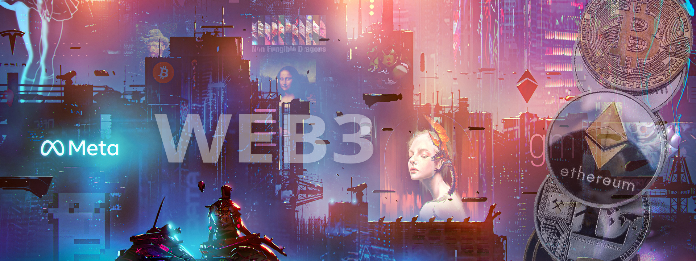

Article 5
Les entreprises qui investissent dans le Web 3.0
Tendances et
implications

Le Web 3.0, avec son approche décentralisée et basée sur la blockchain, suscite un intérêt croissant parmi les entreprises du monde entier. Alors que le Web 3.0 est encore en développement, de nombreuses entreprises investissent déjà dans cette technologie émergente pour anticiper les opportunités potentielles et rester compétitives sur le marché. Dans cet article de veille technologique, nous examinerons les tendances actuelles des entreprises qui investissent dans le Web 3.0, les domaines d'investissement clés et les implications potentielles pour le monde des affaires.
De nombreuses entreprises de divers secteurs investissent dans le Web 3.0 pour exploiter les opportunités offertes par cette nouvelle ère de l'Internet. Voici quelques tendances clés observées dans les entreprises qui investissent dans le Web 3.0 :
Investissement dans la technologie blockchain : La technologie blockchain est au cœur du Web 3.0, et de nombreuses entreprises investissent dans cette technologie pour explorer les cas d'utilisation potentiels. Les entreprises investissent dans la recherche et le développement de nouvelles plateformes, protocoles et applications basées sur la blockchain, ainsi que dans l'acquisition de startups spécialisées dans ce domaine. Les domaines d'investissement clés comprennent les services financiers, la logistique, la supply chain, la santé, l'énergie et l'immobilier, entre autres.
Expérimentation avec les protocoles et les contrats intelligents : Les protocoles et les contrats intelligents sont au cœur du Web 3.0, permettant des interactions décentralisées et autonomes sur la blockchain. De nombreuses entreprises expérimentent avec ces protocoles et les contrats intelligents pour créer de nouveaux modèles d'affaires, tels que les DAO (Decentralized Autonomous Organizations) et les plateformes de partage de revenus basées sur la blockchain. Cela peut permettre une gouvernance plus transparente et démocratique, ainsi qu'une réduction des coûts et des intermédiaires.
Exploration de nouvelles formes d'économie basées sur les actifs numériques : Le Web 3.0 permet la création et la gestion d'actifs numériques sur la blockchain, tels que les jetons, les NFT (Non-Fungible Tokens) et les DAO tokens. De nombreuses entreprises explorent les opportunités offertes par ces nouveaux actifs numériques pour créer de nouvelles formes d'économie basées sur les protocoles et les contrats intelligents. Cela peut inclure la tokenisation d'actifs réels, la création de marchés décentralisés, la récompense des utilisateurs pour leur contribution à une plateforme, et bien plus encore.
Adoption de la gouvernance décentralisée : La gouvernance décentralisée est un pilier clé du Web 3.0, permettant aux utilisateurs de participer activement à la prise de décision et à la définition des règles d'une plateforme. Certaines entreprises investissent dans la gouvernance décentralisée en adoptant des modèles de gouvernance plus transparents, où les utilisateurs peuvent voter sur les décisions importantes, ou en permettant aux utilisateurs de devenir des propriétaires ou des membres d'une plateforme grâce à la détention de jetons ou de tokens de gouvernance. Cela peut favoriser la confiance et l'engagement des utilisateurs, ainsi que stimuler l'innovation et la croissance de la communauté.
Les entreprises qui investissent dans le Web 3.0 peuvent bénéficier de plusieurs avantages, mais il y a aussi des implications importantes à prendre en compte. Voici quelques-unes des principales implications pour le monde des affaires :
Nouveaux modèles d'affaires : Le Web 3.0 offre la possibilité de créer de nouveaux modèles d'affaires basés sur la décentralisation, la transparence et l'autonomie. Les entreprises peuvent créer des plateformes décentralisées, des marchés peer-to-peer, des systèmes de gouvernance participatifs et bien d'autres. Cependant, cela peut également nécessiter une adaptation des modèles d'affaires traditionnels et une compréhension approfondie des nouvelles possibilités offertes par le Web 3.0.
Confiance et sécurité : Le Web 3.0 vise à améliorer la confiance et la sécurité grâce à la décentralisation et à la transparence. Cependant, cela peut également présenter des défis en matière de sécurité, de gestion des données et de protection de la vie privée. Les entreprises devront s'assurer de mettre en place des mesures de sécurité appropriées pour protéger les actifs numériques, les données des utilisateurs et garantir la confidentialité.
Gouvernance participative : La gouvernance décentralisée peut permettre aux utilisateurs de participer activement aux décisions et à la direction d'une plateforme. Cependant, cela peut également rendre la prise de décision plus complexe et nécessiter la mise en place de processus de gouvernance clairs et équitables. Les entreprises devront réfléchir à la manière de mettre en place une gouvernance participative efficace et équitable pour impliquer les utilisateurs tout en maintenant la stabilité et la direction stratégique de l'entreprise.
Interopérabilité et standardisation : Le Web 3.0 est composé de multiples protocoles et plateformes décentralisées, ce qui peut entraîner des défis d'interopérabilité et de standardisation. Les entreprises devront s'assurer de comprendre les protocoles et les normes du Web 3.0 pour pouvoir interagir efficacement avec d'autres acteurs du secteur. La coopération et la collaboration avec d'autres entreprises, développeurs et communautés seront essentielles pour favoriser l'adoption et la croissance du Web 3.0.
Le Web 3.0 offre de nouvelles opportunités passionnantes pour les entreprises qui investissent dans cette technologie émergente. Les tendances actuelles montrent que de nombreuses entreprises explorent les opportunités offertes par la technologie blockchain, les protocoles décentralisés, les actifs numériques et la gouvernance participative. Cependant, il est important de prendre en compte les implications potentielles pour le monde des affaires, notamment en termes de nouveaux modèles d'affaires, de confiance et de sécurité, de gouvernance